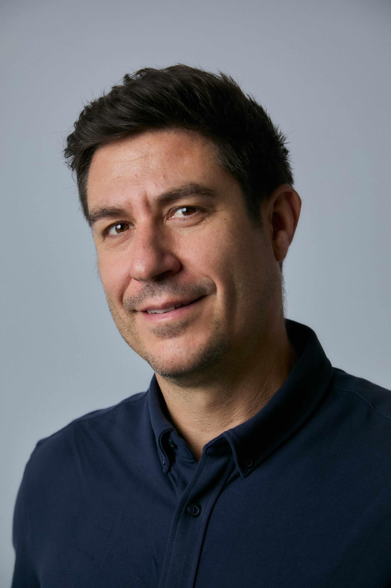

Hi, I'm
Product leader based in Barcelona. I build digital products at scale — from loyalty platforms to payment innovations — using agile methodologies and cross-functional teams. Passionate about Cloud, AI, and technology that creates real impact.

I'm a proactive product professional with a passion for technology and innovation. I thrive at the intersection of business and engineering — translating complex technical challenges into clear product decisions, and bridging the gap between stakeholders and development teams.
My day-to-day involves working with Cloud environments, large-scale data (BigData), IoT systems, and Artificial Intelligence. I govern these projects through agile methodologies and multidisciplinary teams, always focused on delivering high-value products faster and with less risk.
Barcelona · Hybrid
Defining the vision and strategy for the Promotions feature of Lidl Plus — Lidl's loyalty program, active across multiple European markets. Leading a large cross-functional team, managing the product roadmap and backlog, and making data-driven decisions to deliver high-impact features.
Barcelona · On-site
Project Manager in the Payment Methods area, driving innovative projects to improve user payment experiences and offer new capabilities to merchants. Technical bridge between the business and key third parties including Visa, Mastercard, and Redsys.
Barcelona
Led large-scale technology projects in web portals and mobile applications for banking and industrial sector clients. Coordinated multidisciplinary teams and identified, prepared and presented tailored solutions to client needs.
Barcelona
PMO and Project Manager role for technology within the AGBAR group. Created and maintained project management methodologies, acting as facilitator between clients, suppliers and the project team. Led innovation and knowledge management projects.
Barcelona
Project Manager for all intranet and web application projects, primarily for marketing, communications and legal teams. Client liaison, development team management, and full project lifecycle documentation.
Postgraduate in Agile Methods for Product Development
Executive Master in Innovation · Barcelona
I'm always open to interesting conversations about product, technology, or new opportunities.
Connect on LinkedIn